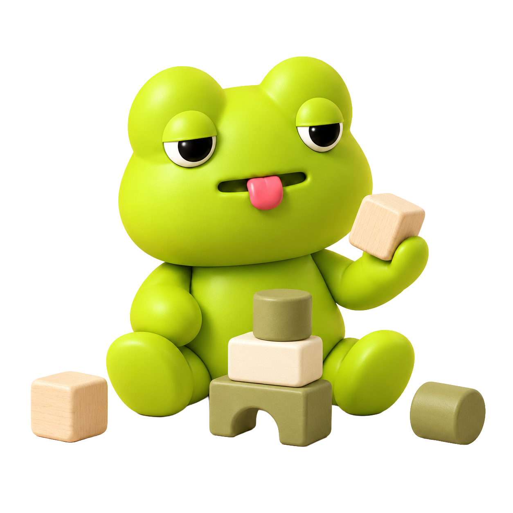
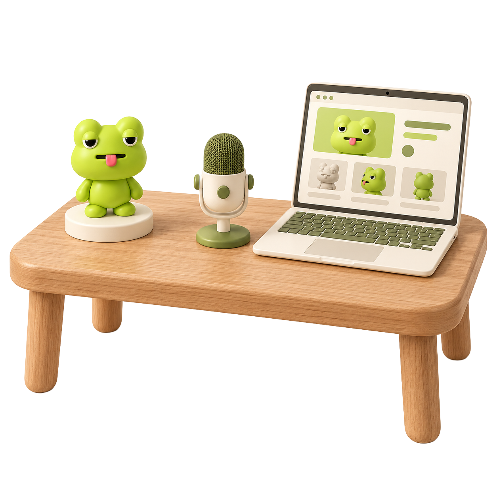

아두르겸댕 브랜드 이야기
3D로 만드는 캐릭터의 세계,
아두르겸댕
아두르겸댕은 ‘4글자 처방’을 콘셉트로 3D 캐릭터와 콘셉트 아트를 만들고 있습니다.
서울일러스트레이션페어에 3년 연속 참여하며 캐릭터의 이야기를 관람객과 나누고 있습니다.

캐릭터 소개
조금 느려도,
자기만의 방식으로
졸린 눈과 빼꼼 내민 혀가 매력인 초록 개구리, 구리입니다. 조금은 느리지만 자기만의 방식을 만들어가는 친구예요. 느긋해 보여도 좋아하는 일에는 은근한 고집이 있고, 새로운 것이 궁금하면 슬쩍 다가가 봅니다. 서두르기보다 충분히 살펴보고, 마음이 움직이면 자기만의 속도로 한 걸음을 내딛습니다.
만든 사람
혼자 배우기 시작한 3D,
나만의 캐릭터 세계로.
저는 다양한 관심사를 바탕으로 여러 분야를 넘나드는 작가이자 디자이너입니다. 나만의 캐릭터를 만들고 싶어 블렌더를 독학했고, 그 과정에서 쌓은 경험을 클래스101 강의로 나누었습니다.
우연히 창업가 과정을 접한 뒤, 개발도 배워보고 싶다는 호기심으로 새로운 도전을 시작했습니다. 지금은 캐릭터와 공간을 만드는 일을 넘어, 직접 웹사이트와 서비스를 구현하며 표현의 범위를 넓혀가고 있습니다.
